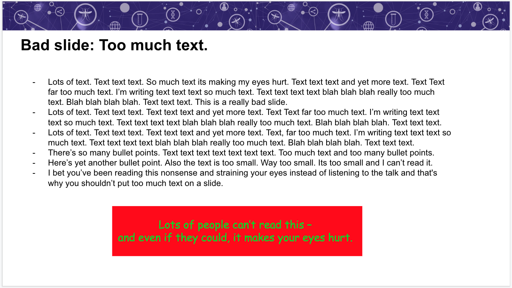
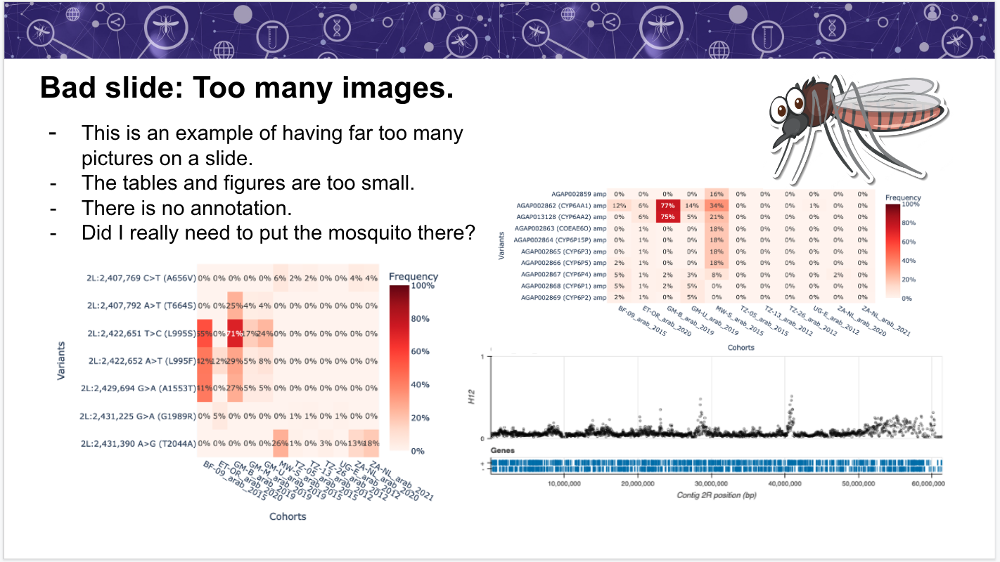
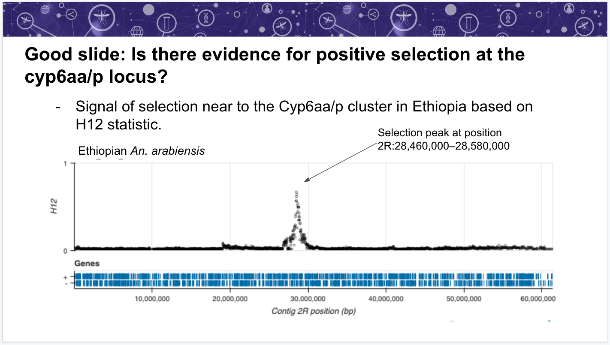

Module 2 - Presenting results of a genomic surveillance data analysis
Contents

Workshop 8 - Planning analysis and presenting results
Module 2 - Presenting results of a genomic surveillance data analysis#
Theme: Analysis
This module will provide advice on how to communicate key results from a genomic surveillance data analysis. The focus is on planning a presentation, using a suggested outline to organise information and communicate your results effectively.
Learning objectives#
After completing this module, you will be able to:
Prepare a presentation of genomic data analysis for a public health scientific audience
Present and communicate analysis results clearly and concisely
Lecture#
English#
Français#
Assumptions#
Before starting to think on how to communicate results, we will assume that:
You have genomic data from a surveillance project.
You have completed your exploratory analysis.
You have identified some key findings which are interesting and relevant to malaria vector surveillance and control.
You want to present your findings to a general international scientific audience in field of global health. E.g., PAMCA or ASTMH conference
Planning & preparation#
Before you prepare a presentation, consider your audience and what they are likely to know.
We are going to assume an international scientific audience in the general field of global health research.
Remember, the knowledge within the audience will be mixed and there might be people working on a similar topic to yours but from a completely different point of view. For this exercise, we will consider the audience:
May know about malaria in Africa but not epidemiology or vector ecology/control.
Will understand basic concepts in genomics but is unlikely to be expert on specifics such as NGS or population genomics methods.
Is unlikely to have detailed knowledge of the genes or variants involved in insecticide resistance.
Adapt your presentation to your audience. Depending on the conference or session, you can assume different depth of knowledge on a particular topic which will allow you to effectively allocate your time to different subjects.
Timing#
Consider the time available for your presentation
In general, allowing 1 slide per minute is sensible
We are going to assume you have time for a longer presentation, e.g., ~20 minutes
If the available time is shorter, focus only on a few key findings which you think are most relevant
Some scientific conferences allow ~12 minutes per talk, which is very challenging!
Although it is tempting to include all your results, remember that communicating less information well is better than communicating more information badly - less is more!
Data Storytelling#
Your goal is to communicate your key findings and their relevance to current challenges in malaria vector research, surveillance and control. So, you want to start thinking from the key findings and see if you can build a “data story” around them.
Think about the narrative structure and arc
Select the right data
Choose appropriate visualization
There are loads of great resources on the web providing training and advice on good data storytelling. E.g., Telling Effective Data Stories with Data, Narrative and Visuals. You can also search for the term “data storytelling” to find more resources.
Suggested outline#
Here is a suggest outline for your presentation:
Brief overview
Background and motivation
Methods (study design and data)
Findings and interpretation
Conclusions
Background and motivation#
You want to concisely answer: Why is your research important? and How does your research fits into the wider field?
Include relevant overviews of:
Malaria epidemiology in your country.
Highlight the burden, spatial variations and temporal trends.
Malaria control policy in your country.
Current and planned interventions.
Successes, challenges and threats.
Vector ecology.
Major vector species.
Important spatial or temporal variation.
Then, you want to focus on: What is your specific question, how does it contribute to current knowledge and how will you address it? You can relate this to the background information you just talked through. Here is an example: E.g., “To investigate whether population have insecticide resistance to pyrethroids in response to recent population control we investigated genomic variation at the voltage gated sodium channel gene.”
Methods#
You need to include information on:
Study design
What mosquitoes were collected, how many, where, when, how?
Data
How the data was processed? Consider how many samples passed QC, how they where sequenced, etc.
Where can the data be accessed from? Remember that there is data freely available through the MalariaGEN python package.
All of these details are important to ensure reproducibility.
Remember these methods do not refer to the analytical methods which you can usually summarise when presenting particular pieces of data.
Findings and interpretation#
The order provided in the exploratory analysis plan (module 1) is intuitive but view it as a menu from which to pick your key findings.
For example, if the species assignment is non-controversial you might choose not to present the AIM or PCA analysis.
If the geographical population structure fits what you would expect to see, you could only mention the number of samples used and that they do not have apparent population structure.
If you have not found any CNVs of interest, you might want to leave this out to spend more time on other results.
Conclusions#
Restate the key findings.
Recapitulate
Link evidence you have presented earlier
Sum up evidence for or against hypothesis.
Place findings back into wider context.
Suggested next steps or improvements.
Effective presentation#
Presenting your findings#
To make sure you cover all your points on each slide, you could try to talk through each slide using the same flow:
Question - state the question you’d like to answer.
e.g., “Is there any geographical population structure within An. coluzzii?”
Method - state very briefly what analysis you did.
e.g., “I ran a principal components analysis of the SNP data using An. coluzzii samples”
Finding - state what you found/discovered from the analysis.
e.g., “I found that there are clearly two distinct groups of An. coluzzii, divided by collection location in the north or south of the country.”
Evidence - highlight the features of the data which support your finding.
e.g., “You can see these two clusters the scatter plot of the first two principal components.”
Significance - what does this mean and why is this interesting?
e.g., “Gene flow appears limited between the north and south. This is interesting because the two regions have different ecologies, so perhaps there are two distinct populations adapted to the different settings.”
Advice on slides#
Aim to convey a single main point per slide.
Avoid too much text or many bullet points.
Choose visualisations that focus on the finding you want to communicate.
Make sure visualisations are clear and readable (including label axes, font size, colour combinations, etc.)
Annotate figures or tables to highlight key findings.
Text on the slide should not be your exact talk, try practicing beforehand so you do not end up reading all the text from it.
Here are some examples of bad slides. On the first one, you want to avoid too much text as it makes it harder for the audience to read and understand your main message, also, you want to avoid colour schemes that could make the reading more challenging (e.g. try to use colour-blind friendly palettes). 
On the second, we have too many figures, which detract from the message. 
On a good slide, you can see:
A clear header
A single bullet point that highlights a single main finding
A single figure that conveys the message
An annotation in the figure that helps draw attention to the main finding 
Example slide presentation#
Let’s look at some examples of presenting slides with different key findings:
Population structure in East African An. Arabiensis#
%%html
<iframe width="560" height="315" src="https://www.youtube.com/embed/6kGB0seGiJU?start=1021&end=1112" title="YouTube video player" frameborder="0" allow="accelerometer; autoplay; clipboard-write; encrypted-media; gyroscope; picture-in-picture" allowfullscreen></iframe>
Genomic variants associated with pyrethroid target-site resistance in Burkina Faso#
%%html
<iframe width="560" height="315" src="https://www.youtube.com/embed/6kGB0seGiJU?start=1115&end=1194" title="YouTube video player" frameborder="0" allow="accelerometer; autoplay; clipboard-write; encrypted-media; gyroscope; picture-in-picture" allowfullscreen></iframe>
Positive selection at the Cyp6 locus in Burkina Faso#
%%html
<iframe width="560" height="315" src="https://www.youtube.com/embed/6kGB0seGiJU?start=1196&end=1269" title="YouTube video player" frameborder="0" allow="accelerometer; autoplay; clipboard-write; encrypted-media; gyroscope; picture-in-picture" allowfullscreen></iframe>
Well done!#
In this module we have learnt how to:
Consider the audience, timing and story when planning to communicate results
Use a suggested outline to create an easy-to-follow presentation
Present results clearly and effectively
Practical exercises#
English#
In the next modules 3 & 4, you will be able to see some end-to-end examples of what we have covered in module 1 & 2. Use these, together with the structure and advice outlined here, to create a slidedeck to present the key findings (up to a maximum of 10) you identified on module 1.
Consider your audience. If you are attending a conference soon, you might want to think about the specifics of this audience. If you’re attending a training workshop, consider your fellow trainees as your audience.
Make sure to keep your presentation under 20 minutes.
Remember:
You could analyse your own data, but check assumptions above if these data are not part of the MalariaGEN vector observatory.
You can use data from other studies in the MalariaGEN vector observatory data to conduct your exploratory data analysis on. These data are open-access but subject to a publication embargo. This means that you will need to obtain permission before publicly communicating any findings.
Français#
Dans les prochains cours, 3 et 4, vous pourrez interroger des exemples complets de ce que nous avons couvert dans les cours 1 et 2. Interrogez-les avec la structure et les conseils décrits ici, pour créer un diaporama à présenter les principales conclusions (maximum de 10) que vous avez identifiées dans le cour 1.
Considérez votre public. Si vous assisterez prochainement à une conférence, vous pourriez réfléchir aux spécificités de ce public. Si vous assisterez à un formation, considérez vos collègues stagiaires comme votre public.
Assurez-vous de maintenir votre présentation sous de 20 minutes.
Se souvenir:
Vous pouvez utiliser vos propres données pour effectuer les exercices (vérifiez les hypothèses ci-dessus si ces données ne font pas partie de l’observatoire des vecteurs MalariaGEN). Vous pouvez utiliser les données d’autres études dans l’observatoire des vecteurs MalariaGEN pour effectuer votre analyse exploratoire. Ces données sont << accès libre >> mais sont aussi restictif par l’embargo de publication. Par conséquence, vous devrez obtenir une autorisation avant de communiquer publiquement toute découverte.